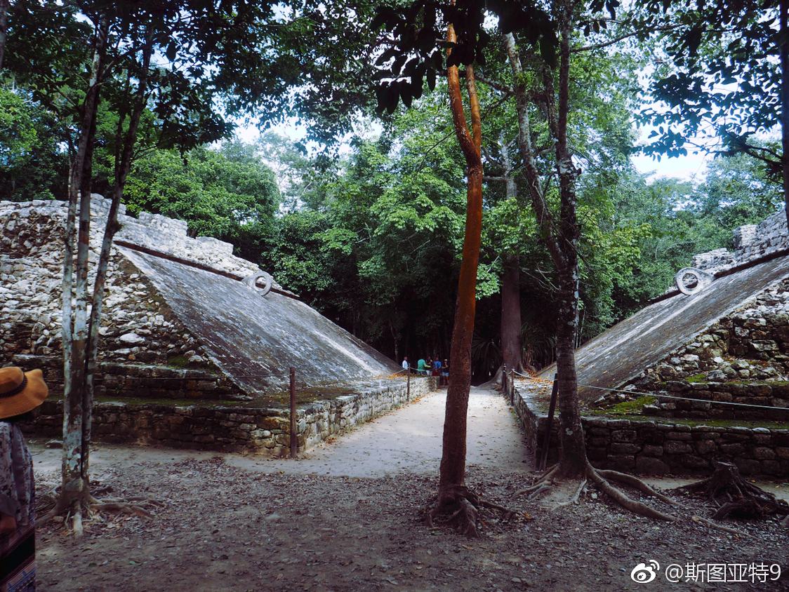
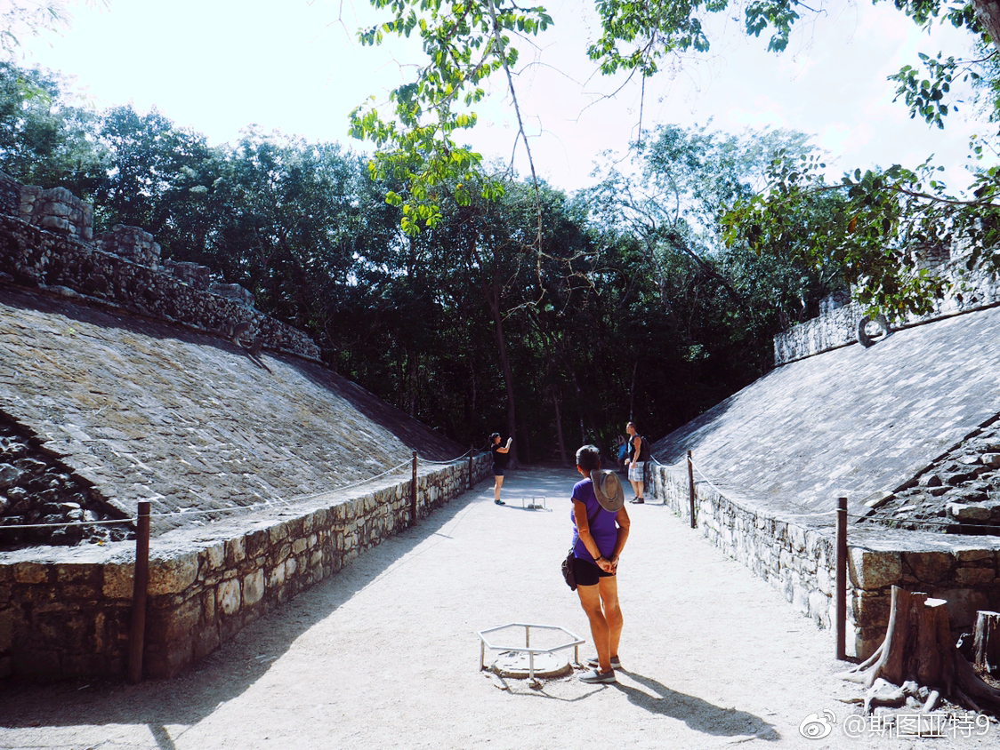

对玛雅遗迹Tulum期望过高，最终感觉很失望。但期望不高的Coba则超出了我的期望值。Coba号称有墨西哥境内最高的玛雅金字塔，而且还是允许爬上去的。在上面鸟瞰一望无际的森林，并在森林中隐约看到Coba另一个金字塔的塔顶，感觉很特别。相比玛雅后古典时期的Chichen Itza, Tulum, Uxmal, Mayapan (就两个还没机会去），兴盛于古典时期的Coba比它们早一个时代。Coba的衰落和Chichen Itza的兴起几乎是同时的。与Chichen Itza那样成熟的景点不同，Coba只有很少一部分森林被清出来供游人观看，大部分还盖在森林下面呢。这也让这个景点多了点辉煌已成过眼云烟的感慨。
- 
- 